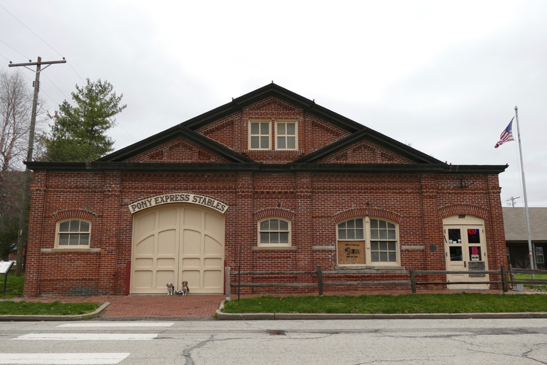

<--Previous Up Next-->

Not only did we travel from Natchez to Mobile, we also traveled from Memphis, through St. Louis, to St. Joe, the eastern end of the Pony Express. This building is now an entertaining museum.
Halley Beagle Missouri St. Joseph Wallace Beagle